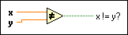

Not Equal? Function
Owning Palette: Comparison Functions
Requires: Base Development System
Returns TRUE if x is not equal to y. Otherwise, this function returns FALSE. You can change the comparison mode of this function.
If you compare two matrices, the default comparison mode is Compare Aggregates, and this function returns a scalar. You can compare an array or cluster of a data type to a scalar of the same data type and produce an array or cluster of Booleans. The connector pane displays the default data types for this polymorphic function.

 Add to the block diagram Add to the block diagram |
 Find on the palette Find on the palette |